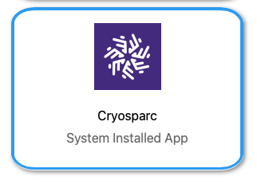

CryoSPARC
CryoSPARC (cryoSPARC) is a scientific software platform for cryo-electron microscopy (cryo-EM) and single-particle analysis.
Requesting Access
Before you can user CryoSPARC on the UW-Madison Cryo-EM HPC cluster, you will need to:
Obtain an non-profit academic research license via (cryoSPARC registration).
Apply via a form for the setup of your CryoSPARC instance on the UW-Madison Cryo-EM HPC cluster at (uw account registration)
Usage
CryoSPARC should be directly launched from the Open OnDemand frontpage.
{kind=link}
We recommend that you choose to launch a session of at least 12-hours length to have time for running your jobs to completion. When launching a processing job, you will need to choose between available queues on the HPC cluster.

Please have patience for start-up of a CryoSPARC session, and only start a single CryoSPARC session at a time on the cluster. After a few minutes, you will see a ready to use status for the application. You can then proceed to connect.

This will then launch a session via remote desktop to a browser view of the CryoSPARC application. You can then proceed to login with your username and password that were provided after completing our registration form above. After login you should see the typical CryoSPARC web interface as below, showing your projects and job activities.

Please choose the r5000 queue for submitting your jobs. If additional queue resources are required, reach out to the HPC administrators first.
Tutorial data
The single-particle analysis tutorial dataset for the T20S protein is available at: /mnt/hpc_users/share/resources/cryosparc/empiar_10025_subset/
Project data
Save your projects within your home directory /mnt/hpc_users/home/<netid>/cryosparc/projects. The CryoSPARC instance will run as your own user with permissions to access and write within your folders.
After you have completed your data processing in CryoSPARC, you may want to bring your results back to your home lab.
Please follow these steps to export a project: (export project)
If you want to import a project:
Transfer the project directory and all contents into a folder under your data location within your home directory /mnt/hpc_users/home/<netid>/cryosparc/projects
Within the CryoSPARC interface, within the menu of ‘New Project’ choose to “Attach Project” and provide the location to the data location under the /mnt/hpc_users/home/<netid>/cryosparc/projects.

You may hit an error about a lock file, if you have directly copied this project without detaching from the original CryoSPARC instance. CryoSPARC will try to prevent the same folder from being attached simultaneously to two instances of CryoSPARC at the same time. The CryoSPARC project may have a cs.lock file, if so, remove this lock file and retry to “Attach Project” via CryoSPARC in the new instance.
Additional Cryosparc Resources:
Cryosparc Guide https://guide.cryosparc.com/
Cryosparc Tutorials https://guide.cryosparc.com/processing-data/tutorials-and-case-studies/